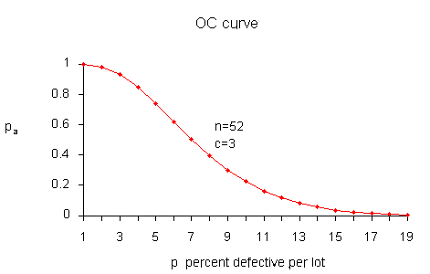
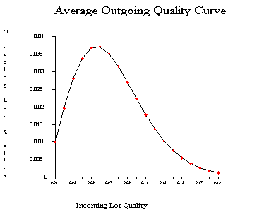
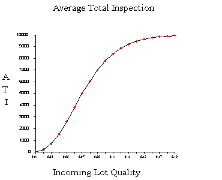

|
6.
Process or Product Monitoring and Control
6.2. Methods of Process Monitoring and Control 6.2.4. How do we perform product monitoring for acceptability?
|
|||
|
|
|||
| Acceptance sampling basics |
Acceptance sampling is a major field of statistical
quality control. It found its origin during World War II when the military
had to determine which lots of ammunition to accept. If everything was
tested in advance, no bullets would be left to ship. If, on the other hand,
none were tested, malfunctions might occur in the field of battle, with
potentially disastrous results.
Acceptance sampling is "the middle of the road" approach between no inspection and 100 % inspection. There are two major classifications of acceptance plans: by attributes ("go, no-go") and by variables. The attribute plan is the most common. Another expression for "acceptance plan" is "sampling plan". Sampling plans can be single, double or multiple. A single sampling plan for attributes consists of a sample of size \(n\) and an acceptance number \(c\). The procedure operates as follows: Select \(n\) items at random from a (large) lot. If there are fewer than \(c\) defectives in the sample, accept the lot. Otherwise reject the lot. Double sampling plans take a second sample and combine the information from the two samples to reach a decision. Multiple sampling combines the information from 3 or more samples. We will first focus on single sampling. Suppose that a supplier submits a lot of size \(N\) for inspection. \(N\) should be large (theoretically infinity). Then the sampling plan \(n=52\), \(c=3\) means that from a lot of size \(N\), a random sample of 52 is inspected, and if the number of defective items is greater than 3, the lot is rejected. Otherwise the lot is accepted. In order to measure the performance of an acceptance-sampling plan we use the Operating Characteristic (OC) curve. This curve plots the probability of accepting the lot (Y-axis) versus the lot fraction or percent defectives. |
||
| OC curves | The visual shape of the OC curve for a
(52, 3) sampling plan is shown below.
 It is instructive to show how the points on the curve are obtained, once we have a sampling plan \((n,c)\) - later we will demonstrate how a sampling plan \((n,c)\) is obtained. We assume that the lot is very large, as stated before, theoretically infinite. Then the distribution of the number of defectives, \(d\), in a random sample of \(n\) items is binomial with parameters \(n\) and \(p\), where \(p\) is the fraction of defectives per lot. The probability of observing exactly \(d\) defectives is |
||
| The binomial distribution |
$$ P(d) = f(d) = \frac{n!}{d!(n-d)!} p^d (1-p)^{n-d} \, . $$
The probability of acceptance is the probability that \(d\), the number of defectives, is less than or equal to \(c\), the acceptance number. This means $$ P_a = P(d \le c) = \sum_{d=0}^c \frac{n!}{d!(n-d)!} p^d (1-p)^{n-d} \, . $$ Using this formula with \(n = 52\), \(c=3\), and \(p = 0.01, \, 0.02, \, \ldots, \, 0.12 \), we find $$ \begin{eqnarray} P_a & \,\,\,\,\, & P_d \\ 0.998 & \,\,\,\,\, & 0.01 \\ 0.980 & \,\,\,\,\, & 0.02 \\ 0.930 & \,\,\,\,\, & 0.03 \\ 0.845 & \,\,\,\,\, & 0.04 \\ 0.739 & \,\,\,\,\, & 0.05 \\ 0.620 & \,\,\,\,\, & 0.06 \\ 0.502 & \,\,\,\,\, & 0.07 \\ 0.394 & \,\,\,\,\, & 0.08 \\ 0.300 & \,\,\,\,\, & 0.09 \\ 0.223 & \,\,\,\,\, & 0.10 \\ 0.162 & \,\,\,\,\, & 0.11 \\ 0.115 & \,\,\,\,\, & 0.12 \, . \end{eqnarray} $$ |
||
| Average Outgoing Quality | Average Outgoing
Quality (\(AOQ\))
What does one do when a lot is rejected? Usually the rejected lot is completely inspected and all the defected items are removed. If feasible, rework may be performed . Or, if a vendor is involved, the defective items may be returned. There is an option to replace the defective items by good ones. Such sampling schemes are referred to as rectifying inspection programs. After screening, the final fraction defectives will be zero. However, accepted lots have fraction defective \(p_0\). Therefore, the outgoing lots from the inspection stations are a mixture of lots with fractions defective \(p_0\) and 0. So the average fraction defective is \(p_1\), which is equal to or less than \(p_0\). How do we calculate the average outgoing quality (\(AOQ\))? Assume that the lot size is \(N\) and that all defectives are replaced with good items. Then the average fraction defective, called the average outgoing quality, is $$ AOQ = \frac{p_a p(N-n)}{N} \, . $$ For example, let \(N=10,000\), \(n = 52\), \(c=3\) and \(p\), the quality of incoming lots, = 0.03. Now at \(p=0.03\), we glean from the OC curve table that \(p_a = 0.930\) and $$ AOQ = \frac{0.930(0.03)(10,000-52)}{10,000} = 0.00278\, . $$ Setting \(p = 0.01, \, 0.02, \, \ldots, \, 0.12\), we can generate the following table. $$ \begin{eqnarray} AOQ & \,\,\,\,\, & P_d \\ 0.0010 & \,\,\,\,\, & 0.01 \\ 0.0196 & \,\,\,\,\, & 0.02 \\ 0.0278 & \,\,\,\,\, & 0.03 \\ 0.0338 & \,\,\,\,\, & 0.04 \\ 0.0369 & \,\,\,\,\, & 0.05 \\ 0.0372 & \,\,\,\,\, & 0.06 \\ 0.0351 & \,\,\,\,\, & 0.07 \\ 0.0315 & \,\,\,\,\, & 0.08 \\ 0.0270 & \,\,\,\,\, & 0.09 \\ 0.0223 & \,\,\,\,\, & 0.10 \\ 0.0178 & \,\,\,\,\, & 0.11 \\ 0.0138 & \,\,\,\,\, & 0.12 \end{eqnarray} $$ A plot of the \(AOQ\) versus \(p\) is given below.  From examining this curve we observe that when the incoming quality is very good (very small fraction of defectives coming in) then the outgoing quality is also very good (very small fraction of defectives going out) When the incoming lot quality is very bad, most of the lots are rejected and then inspected. The "duds" are eliminated or replaced by good ones, so that the quality of the outgoing lots, the \(AOQ\), becomes very good. In between these extremes, the \(AOQ\) rises, reaches a maximum, and then drops. The maximum ordinate on the \(AOQ\) curve represents the worst possible quality that results from the rectifying inspection program. It is called the average outgoing quality limit, (\(AOQL\)). From the table we see that the \(AOQL = 0.0372\) at \(p = 0.06\) for the above example. One final remark: if \(N \gg n\) then \(AOQ \approx p_a p\). |
||
| The \(LTPD\) and \(AQL\) | The Lot
Tolerance Percent Defective (\(LTPD\)) and the
Acceptable Quality Level (\(AQL\))
The \(AQL\) represents the poorest level of quality for the producer's process that the consumer would consider to accept on a regular basis. The \(AQL\) is a property of the producer's manufacturing process, not of the sampling plan. The consumer hopes that the producer's process will operate at a level that is much better than the \(AQL\). In addition, the consumer is also interested in the other end of the OC curve, that is, in the protection against accepting lots of even poorer quality. The technical term for this situation is lot tolerance percent defective (\(LTPD\)).
The \(LTPD\) is the worst quality that the consumer is willing to accept
in an individual lot. As is the case in the \(AQL\), the \(LTPD\) is not
a function of the sampling plan. But where the \(AQL\) is a property of the
producer's process, the \(LTPD\) is a property of the consumer's quality specifications.
|
||
| Producer's Risk and Consumer's Risk | Producer's
Risk and Consumer's Risk
In order to design a sampling plan with a specified OC curve one needs two designated points. Let us design a sampling plan such that the probability of acceptance is \(1-\alpha\) for lots with fraction defective \(p_1\) and the probability of acceptance is \(\beta\) for lots with fraction defective \(p_2\). If we are willing to assume that binomial sampling is valid, then the sample size, \(n\), and the acceptance number, \(c\), are the solution to $$ \begin{eqnarray} 1-\alpha & = & \sum_{d=0}^c \frac{n!}{d!(n-d)!} p_1^d (1-p_1)^{n-d} \\ \beta & = & \sum_{d=0}^c \frac{n!}{d!(n-d)!} p_2^d (1-p_2)^{n-d} \, . \end{eqnarray} $$ The two simultaneous equations are nonlinear so there is no simple, direct solution. There are however a number of iterative techniques available that give approximate solutions so that composition of a computer program poses no problems. While any two points on the OC curve suffice, it is customary to use the \(AQL\) and \(LTPD\) points for this purpose. When the levels of lot quality specified are \(p_1 = AQL\) and \(p_2 = LTPD\), the corresponding points on the OC curve are usually referred to as the producer's risk and the consumer's risk respectively. So, \(1-\alpha\) is the producer's risk and \(\beta\) is the consumer's risk. |
||
| Average Total Inspection | The Average
Total Inspection (\(ATI\))
We have seen that an acceptance sampling plan that requires corrective action in the form of 100 % inspection (or screening) of a rejected lot is called a rectification inspection program. What is the total amount of inspection? If all lots contain zero defectives, no lot will be rejected. If all items are defective, all lots will be inspected, and the amount to be inspected is \(N\). Finally if the lot quality is \(0 < p < 1\), the average amount of inspection per lot will vary between the sample size, \(n\), and the lot size, \(N\). Let the quality of the lot be \(p\) and the probability of lot acceptance be \(p_a\), then the average total inspection per lot is $$ ATI = n + (1-p_a)(N-n) \, . $$ For example, let \(N = 10,000\), \(n=52\), \(c=3\), and \(p=0.03\). We know from the OC table that \(p_a = 0.930\). Then $$ ATI = 52 + (1-0.930)(10,000-52) = 753 \, . $$ Setting \(p = 0.01, \, 0.02, \, \ldots, \, 0.14\) generates the following table. $$ \begin{eqnarray} ATI & \,\,\,\,\, & P_d \\ 70 & \,\,\,\,\, & 0.01 \\ 253 & \,\,\,\,\, & 0.02 \\ 753 & \,\,\,\,\, & 0.03 \\ 1584 & \,\,\,\,\, & 0.04 \\ 2655 & \,\,\,\,\, & 0.05 \\ 3836 & \,\,\,\,\, & 0.06 \\ 5007 & \,\,\,\,\, & 0.07 \\ 6083 & \,\,\,\,\, & 0.08 \\ 7012 & \,\,\,\,\, & 0.09 \\ 7779 & \,\,\,\,\, & 0.10 \\ 8388 & \,\,\,\,\, & 0.11 \\ 8854 & \,\,\,\,\, & 0.12 \\ 9201 & \,\,\,\,\, & 0.13 \\ 9453 & \,\,\,\,\, & 0.14 \end{eqnarray} $$ A plot of \(ATI\) versus \(p\), the Incoming Lot Quality (\(ILQ\)) is given below.  |
||